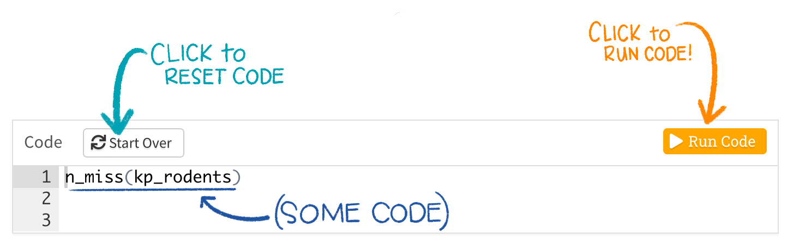
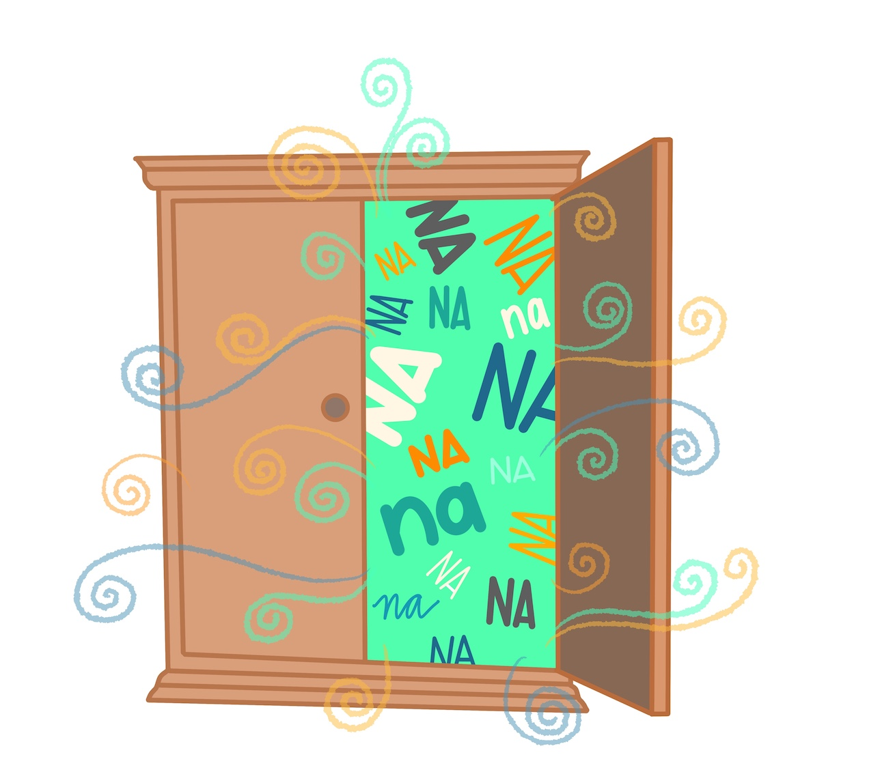
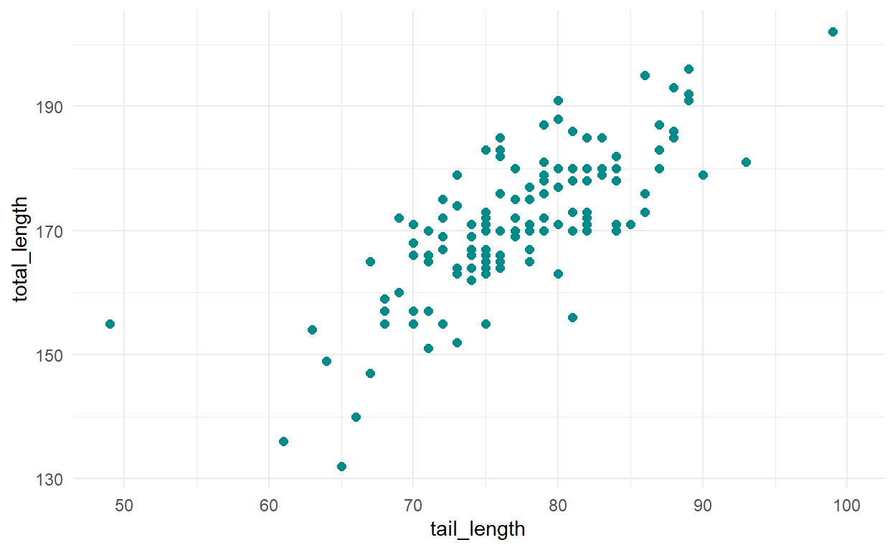
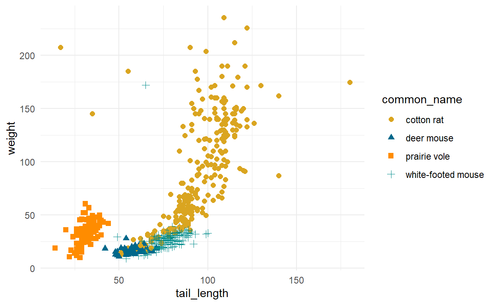
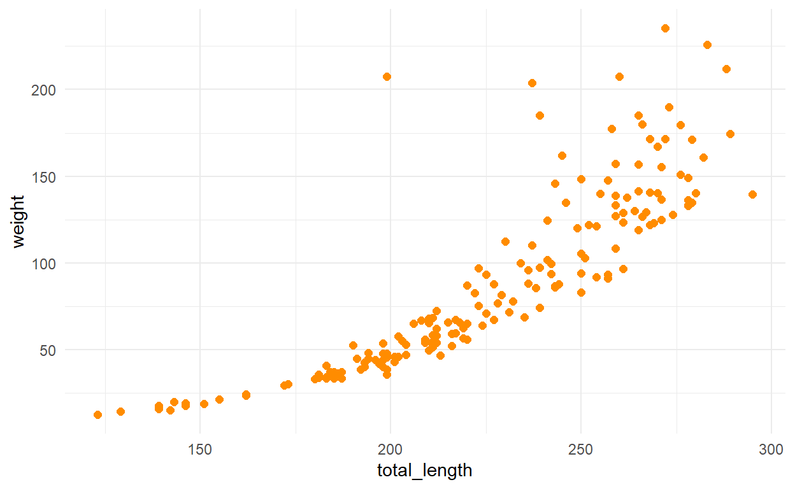
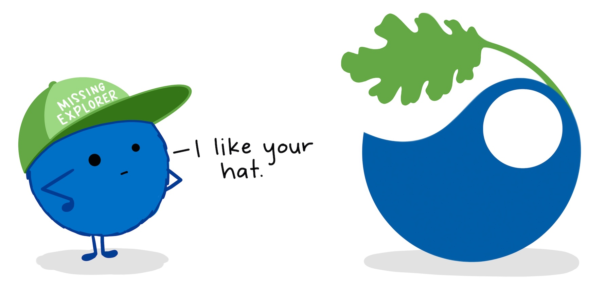

1. Introduction

Missing values*, indicated by (or coerced to) NA in R, are common in environmental data due to equipment malfunction, survey non-response, human error, resource limitations, and any number of other unforeseen hiccups that can occur during data collection. Despite their ubiquity, NAs are rarely considered in exploratory data analysis, and are commonly “dealt with” (read: disappeared) by listwise deletion. Listwise deletion (in which any row with an NA is removed) may be the best method for handling missings, but also omits valuable existing observations, reduces statistical power, and depending on the mechanism of missingness can increase bias in parameter estimates. Exploring and thinking critically about missing data is an important and often overlooked part of exploratory data analysis that can help us to understand what data are missing and why, so that we choose an appropriate method for handling them.
But how do we explore and visualize data that don’t exist?
In this tutorial, we will move beyond is.na() to learn other useful tools and approaches for exploring and visualizing missing values with helpful functions in the naniar package by Dr. Nick Tierney.
*Here, I use “missing values” to describe any missing data record (NA), which can be any type (e.g. character, date, etc.) and does not imply only numeric data.
Working through this tutorial
Throughout the tutorial, you will see code examples, coding exercises, and critical thinking questions. Code examples and exercises assume basic understanding of R, functions, arguments, and the pipe operator. You do not need to have R or RStudio installed to run code in this tutorial.
= Example code
Look for the helper robot icon for code examples throughout the tutorial. The examples contain pre-written, working code for you to explore and run by pressing the orange ‘Run’ button in the upper right.
Don’t worry - you can’t break the example code. If you update code in any of the examples and get an error message, just press ‘Start Over’ in the upper left and the code will automatically reset to the default!

= Coding exercises
The orange keyboard icon indicates practice coding exercises where you’ll be asked to type in code manually to explore missing observations in the data. If you get stuck, click on the ‘Solution’ or ‘Hint’ button!
= Thinking questions
The brain icon indicates questions for you to think about and answer. For some, there is not a right or wrong answer. There may be many right answers. Many of the thinking questions will refer to a coding example or exercise - in those cases make sure to run the relevant code so that you can see the output needed to answer the questions.
NOTE: There are many ways to explore NA values in R. This tutorial introduces naniar functions that I find really useful. It is not comprehensive.
OK, you’re all set to start with this tutorial! Click below to meet the data we’ll use in this tutorial!
2. Meet the data

In this tutorial, we’ll explore missing values in rodent size measurements generously made available by Andrew Hope and the Konza Prairie Long Term Ecological Research Program.
From the Konza Prairie LTER website: “Konza Prairie Biological Station (KPBS) is located on a 3,487 hectare native tallgrass prairie preserve jointly owned by The Nature Conservancy and Kansas State University. The KPBS is located in the Flint Hills of northeastern Kansas (39°05’ N, 96°35’ W), a grassland region of steep-slopes overlain by shallow limestone soils unsuitable for cultivation.”
Konza Prairie Biological Station is on traditional land of the Kaw (Kanza; natively “kką:ze”) People, for which the site and the state of Kansas are named. Click here to learn more about the Kaw Nation.
Konza Prairie LTER. Photo: Konza Prairie LTER Image Gallery.
Data overview:
Data disclaimer: This tutorial works with a simplified subset of the original KP LTER data and is only meant as sample data to learn tools for exploring and considering missing values. It should not be used to draw conclusions about relationships, as important variables about location, transect, disposition, and more are excluded. Refer to the original data, metadata and related publications for more information. Click HERE to access original data and metadata.
Data citation: Hope A. 2019. CSM08 Small mammal host-parasite sampling data for 16 linear trapping transects located in 8 LTER burn treatment watersheds at Konza Prairie. Environmental Data Initiative. https://doi.org/10.6073/pasta/69109c56fcf21a30a8d37369cb47f8de. Dataset accessed 5/01/2020.
The subset has been simplified to 4 rodent species and 9 variables (see metadata at citation link above for more details and collection methods).
Species:
Our subset contains the four most commonly observed rodent species in the study: cotton rat (n = 380), white-footed mouse (n = 313), deer mouse (n = 151), and prairie vole (n = 127). They are all very cute.
Teaching assistants.
Variables:
date: measurement datecommon_name: species common nametotal_length: total length from “tip of nose to tip of tail” (millimeters)tail_length: length from base to tip of tail (millimeters)hf_length: hind foot length “from heel to tip of longest toe nail on left hind foot” (millimeters)ear_length: ear length “from ear notch to furthest edge of pinna” (millimeters)weight: full body mass (grams)sex: sex (m/f)age: age descriptor (“a” = adult, “juv” = juvenile, “sa” = youth adult)
General data structure:
Our data table (commonly called a tibble or data frame in R) is pre-imported and already in tidy format, meaning that it is rectangular and:
- Each variable is a column
- Each observation is a row
Here is a glimpse of 10 lines from the data (out of 971 total observations):
| date | common_name | total_length | tail_length | hf_length | ear_length | weight | sex | age |
|---|---|---|---|---|---|---|---|---|
| 2016-07-21 | prairie vole | 145 | 33 | 21 | 13 | 37.5 | m | a |
| 2016-07-21 | prairie vole | NA | NA | NA | NA | NA | f | a |
| 2016-07-21 | prairie vole | 140 | 34 | 19 | 10 | 41.0 | m | a |
| 2016-07-21 | white-footed mouse | NA | 78 | 23 | NA | 33.0 | m | a |
| 2016-07-21 | white-footed mouse | NA | NA | NA | NA | NA | NA | NA |
| 2016-07-21 | white-footed mouse | NA | NA | NA | NA | NA | NA | NA |
| 2016-07-21 | white-footed mouse | 165 | 75 | 22 | 16 | 25.0 | m | a |
| 2016-07-21 | deer mouse | NA | 59 | 20 | 14 | 14.0 | m | a |
| 2016-07-21 | deer mouse | NA | 62 | 18 | 14 | 17.5 | m | a |
| 2016-07-21 | deer mouse | NA | 57 | 18 | 14 | 13.5 | f | a |
Lo and behold, we see that there are missing values (NAs) in our data. Good thing, otherwise this would be a pretty useless tutorial.
It’s important that we explore the frequency and structure of our missing values in our data, but how do we explore what’s not there? A good place is to count NAs, by variable and group.
Walk toward the wardrobe, move on to the next section to enter naniar!

3. Initial NA counts & proportions

First, we’ll use a few naniar functions to get basic counts of NA values by variable and groups in our data frame. The naniar package was created by Dr. Nick Tierney to help us explore and analyze NAs.
Here is a fun explanation of the package name, from Dr. Tierney: “Well, I think it is useful to think of missing values in data being like this other dimension, perhaps like Narnia - a different world, hidden away. Close, but very different. So the name,”naniar”, is a play on the “Narnia” books. e.g., naniar: The Last Battle (…with missing data). Also, NAniar, naniar = na in r, and if you so desire, naniar may sound like “noneoya” in an nz/aussie accent.”
What we’ll learn in this section
For our first steps into naniar, we’ll use several functions to get quick counts and proportions of NAs in a data frame or column:
n_miss(): ReturnsNAcount in your data frame or columnn_complete(): Returns number of complete valuesprop_miss()andpct_miss(): Proportion or percentage of values that areNAmiss_var_summary(): A summary table ofNAcounts in your tablemiss_case_table(): A summary table ofNAs by case (observation)
n_miss( ) for NA counts
Use n_miss() to return the total NA count for the entire data frame, or for a specific variable (column). We use $ to specify a single column.
Our data frame is pre-imported and stored as object kp_rodents (for Konza Prairie rodents).
Run the examples below, then try the exercises to find NA counts for the kp_rodents data frame!
Example 3.1
Return the total NA count for the entire kp_rodents data frame. Press ‘Run’ to see the outcome!
n_miss(kp_rodents)Example 3.2
Return the total NA count only for the weight column.
n_miss(kp_rodents$weight)Code exercise: n_miss( )
Your turn! In the blank code chunk below, write code that returns the total number of NAs in the age column of kp_rodents. Notice that you can see the solution (but make sure to try coding it yourself manually first!).
n_miss(kp_rodents$age)n_complete( ) returns number of complete values
The complement to n_miss() is n_complete, which returns the number of non-NA values in a data frame or variable.
Example 3.3
Return the number of complete (non-NA) values in the hf_length variable:
n_complete(kp_rodents$hf_length)prop_miss( ) returns proportion of values that are NA
Often, the proportion of missings in a data frame or column are just as (or more) important than the actual counts. Use the prop_miss() function to quickly find what proportion of values in a data frame or column are NA.
Example 3.4
Find the proportion of values that are NA for the entire kp_rodents data frame.
prop_miss(kp_rodents)So 25.6% of all cells in kp_rodents contain NA.
Code exercise: prop_miss( )
What proportion of values in the ear_length column of kp_rodents are NA?
Hint: Use ‘$’ to refer to a single column from a data frame.
miss_var_summary( ) for a summary table of NA counts and percents
The previous functions we used to get missing counts returned a single value for NA count. But that would be tedious to do individually for each variable, especially with a large data frame.
The miss_var_summary() function in naniar returns a nice summary table containing the number of NAs and percent missing for each variable, and sorts them from highest to lowest missingness. Let’s try it out.
Example 3.5
Use miss_var_summary() to create a summary table of missingness for all variables.
miss_var_summary(kp_rodents)Another really cool thing about miss_var_summary() is that it also works with grouped data. For example, what if we wanted to break down the missingness report not just by variable, but also by rodent species. To do that, we can use dplyr::group_by() to indicate we want to group by the different levels in the common_name variable, then pipe into miss_var_summary().
Example 3.6
kp_rodents %>%
group_by(common_name) %>%
miss_var_summary()We can see that now the missingness is reported by species and variable! But you can group by whatever variable you want.
Code exercise: miss_var_summary( ) with grouped data
Write code that summarizes missing counts and percentages in kp_rodents for all variables, grouped by age.
kp_rodents %>%
group_by(age) %>%
miss_var_summary()miss_case_table( ) returns a summary table of missing counts by row
It’s useful to know how many complete cases (rows with 0 missing values) exist, as well as how many observations (rows) have different counts of NAs. miss_case_table creates that for us.
Example 3.7
kp_rodents %>%
miss_case_table()In the summary table, we see that the number of missings per observation (row) ranges from 0 to 7. Of our 971 total observations, 408 are complete (no missing values) - that’s 42.0% of observations in the data. 91 observations contain exactly 7 missing values (9.4% of observations).
Now we have some quick ways to get the counts and proportions of NA values in our data. It can also be really helpful to look at missingness. Walk a bit further into naniar to visualize missingness in the next section!
4. Visualizing NAs
Data visualization is a critical part of exploratory data analysis, and should include visual exploration of missing values. It might not seem intuitive how we can visualize data that don’t exist. In this section, we’ll learn two ways to visualize NA values using functions in naniar:
vis_miss(): Visualize locations ofNAas a ggplot objectgg_miss_fct(): Create a heatmap ofNAcounts by group
vis_miss( ) to visualize missing values
The vis_miss() function in naniar is useful for getting an overall view of where and how often NAs exist in our data frame. It produces a binary heatmap, with all NA locations in black and all non-missing values in gray.
Run the example code below to see the vis_miss() output for our kp_rodents data frame.
Example 4.1
vis_miss(kp_rodents)What’s shown in the visualization above?
- Horizontal axis: the variables (columns) in our data frame, with the %
NAfor each column - Vertical axis: the row position in our data frame (Row 1 is at the top, Row 971 at the bottom)
- Black tiles (look like lines here): any value (“cell”) in our data frame that is
NA - Gray tiles: any value in our data frame that is NOT
NA - The percentages in bottom legend are missing and non-missing % for the entire data frame
OK, so that’s what each element is. How is this useful?
Let’s consider our data. The rodent observations are arranged chronologically. So the earliest observations (2016-07-12) are at the top, and the most recent (2018-08-03) are at the bottom. It looks like there are some time spans during which cases are complete (these look like gray bands across all variables), with interdispersed periods during which data were collected for fewer variables (more black bands across variables). It does not look like the missingness in observations is randomly distributed chronologically. Which should make us ask: Why not?
Critical thinking
Brainstorm several potential explanations for the non-random temporal distribution of missingness in our Konza Prairie rodent data subset. Some things you might consider: different researchers, changes to protocols, treatments or variables excluded from this data, seasonality, etc.
Now, consider your own research or data sets. How might this type of visualization help you explore and understand missingness in your own work?
Add arguments cluster = TRUE or sort_miss = TRUE
The default for vis_miss(), as we saw in the example above, is to reveal missingness with observations in the order that they exist in the data frame. Instead, we might want to cluster or sort the missings.
From the vis_miss() documentation:
cluster = TRUEwill use “hierarchical clustering to arrange rows according to missingness”sort_miss = TRUE“arranges the columns in order of missingness”
Code exercise
Use vis_miss() to visualize missings in kp_rodents, organized by variable from most to fewest missings.
sort = TRUEvis_miss(kp_rodents, sort = TRUE)gg_miss_fct( ): heatmap of % missings by variable and group level
We might also want to visualize the prevalence of NAs by group, across different variables. The gg_miss_fct() function in naniar does it out of the box, producing a heatmap of % missing!
See Example 4.2 below, then complete the exercises to create your own.
Example 4.2
Use gg_miss_fct() to create a heatmap of % missings across all 9 variables, split into groups by the different levels in the age variable (a = adult, juv = juvenile, sa = youth adult).
gg_miss_fct(kp_rodents, fct = age)Cool! What can we learn from it?
We see that the other 8 variables are on the y-axis, and the four levels of our selected variable (age) are on the x-axis: three for each of our recorded age descriptions (a, juv, sa) and a column for any age recorded as NA.
The tile colors indicate the % of values that are NA for each intersection, with the darkest violet indicating 0% missing, and the bright yellow indicating 100% missing.
Critical thinking
Consider the % missing heatmap above to answer the following:
- Generally, which two variables tend to have the highest % missingness across all rodent age groups?
- Do adult, juvenile or youth adult rodents have the highest % of missing values for ear length?
- In a sentence, what do all of the yellow bars in the
NAcolumn mean for this data?
Now try an example where you create a heatmap for % missings using a different variable: common_name.
Code exercise
Use gg_miss_fct() to create a heatmap of % missings in kp_rodents by variable, grouped by species (common_name).
gg_miss_fct(kp_rodents, fct = common_name)Critical thinking
Consider your heatmap from the code exercise above to answer the following:
- Which of the four rodent species tended to have the lowest % missings, across all variables?
- Which two variables are most often missing, across all rodent species?
Now you have some options for initial NA visualization using vis_miss() and gg_miss_fct(). Frolic into the next section to discover how NAs intersect between variables and groups!
5. Explore NA intersections
In addition to the number and percent NAs by group and variable, we should also explore how often they co-occur across variables. For example, we might ask: “In how many observations were only the variables total_length, tail_length and ear_length missing?”
In this section we’ll use UpSet plots to explore NA intersections across variables.
UpSet plots with gg_miss_upset()
We can use an UpSet plot to visualize NA intersections (i.e. NA overlaps, or co-occurrence) across variables.
An UpSet plot, despite its name, provides a delightful alternative to a Venn diagram that is much clearer for counts and large numbers of variables. It’s easiest to explain an UpSet plot when we’re actually looking at one, so run the code for Exercise 5.1 below, which uses the gg_miss_upset() function in naniar to create an UpSet plot of NA co-occurrence.
Example 5.1
Create an UpSet plot for NA co-occurrence in the kp_rodents data frame.
*Note: the argument nsets = 7 below increases the number of variables included to 7 (default is 5), which accomodates our number of variables that contain NAs (recall that we started with 9 variables, but both date and common_name are 100% complete).
gg_miss_upset(kp_rodents,
nsets = 7)Try not to panic. Yes it’s a lot. Let’s break it down.
First, a general summary of our UpSet plot:
- The horizontal black bars in the lower left indicate the number of
NAs total for each variable, with the variable name shown to the right of the corresponding horizontal bar - The vertical black lines with black dots indicate the variables between which the frequency of co-occurring
NAs is indicated by the vertical black bars
Still a lot. Here’s an example to sink your teeth into:
Let’s consider the 4th vertical black column (frequency = 54). We can see that below it, the dots next to 4 variables (tail_length_NA, hf_length_NA, ear_length_NA, and total_length_NA) are filled in. The bar height of 54 means that there are 54 observations (rows) in our data frame in which exactly those four variables are NA.
Critical thinking
Answer the following questions based on the UpSet plot created in Example 5.1:
- In how many observations (rows) of
kp_rodentsare onlyweight,ear_lengthandtotal_lengthmissing? - How many observations are only missing
total_length?
gg_miss_upset() provides a pretty low-code way to find NA intersections across variables!
Advance to the next section explore relationships between your NAs and values for another variable!
6. Missing relationships
So far we have explored missing counts, proportions and intersections, but we don’t have a clear sense of how NAs in one variable might be distributed across values of another variable.
In this section, we’ll just explore our observations for the white-footed mouse. They are stored as object wf_mouse. The first 5 lines of the white-footed mouse subset (n = 313) are shown below:
| date | common_name | total_length | tail_length | hf_length | ear_length | weight | sex | age |
|---|---|---|---|---|---|---|---|---|
| 2016-07-12 | white-footed mouse | 176 | 76 | 17 | 73 | 31.8 | m | a |
| 2016-07-12 | white-footed mouse | 169 | 77 | 17 | 22 | 27.6 | f | a |
| 2016-07-12 | white-footed mouse | 166 | 75 | 18 | 23 | 23.5 | f | a |
| 2016-07-12 | white-footed mouse | 177 | 78 | 17 | 22 | 27.8 | m | a |
| 2016-07-12 | white-footed mouse | 172 | 82 | 17 | 22 | 22.6 | f | a |
The code below creates a ggplot of white-footed mouse tail_length versus total_length. You should also notice the warning message returned above the graph: “## Warning: Removed 182 rows containing missing values (geom_point).”
ggplot(data = wf_mouse, aes(x = tail_length, y = total_length)) +
geom_point(size = 2, color = "cyan4") +
theme_minimal()## Warning: Removed 182 rows containing missing values (geom_point).
That warning message gives us a hint about what’s missing from this graph: from the 313 white-footed mouse observations, 182 of them have NA values for total_length, weight, or both. That leaves us with 131 points on the graph above.
Our question for this section is: For which existing values of total_length and tail_length is the other variable NA?
Explore missing relationships for multiple groups
In the examples above, we learned to use geom_miss_point() to explore missing relationships for a single group. We could create three other subsets manually, one for each species, and do the same thing. Or we can add facet_wrap() to automatically create a graph of missing values for each group, based on a variable of our choosing.
First, let’s return to the full kp_rodents data frame and look at the relationship between tail length and weight for all four rodent species:
ggplot(data = kp_rodents, aes(x = tail_length, y = weight)) +
geom_point(aes(color = common_name, shape = common_name), size = 2) +
scale_color_manual(values = c("goldenrod","deepskyblue4","darkorange","cyan4")) +
theme_minimal()## Warning: Removed 338 rows containing missing values (geom_point).
From the output, we see that 338 total observations (rows) are removed due to missing tail length, weight, or both. Let’s explore those further using geom_miss_point.
Example 6.3
Create a scatterplot that shows hidden missing values in a graph of tail length versus weight for all four rodent species in the same panel.
ggplot(data = kp_rodents, aes(x = tail_length, y = weight)) +
geom_point() +
geom_miss_point() +
scale_color_manual(values = c("darkorange","cyan4")) +
theme_minimal()Answer the following questions based on the graph for Example 6.3 above:
Are there observed values for rodent weight for which tail length is missing? Where do they show up on the graph?
Are there observed values for rodent tail length for which weight is missing? Where do they show up on the graph?
Answer: Yes, to both. Breaking down the Example 6.3 graph:
- Teal dots indicate all observations for which both tail length and weight have recorded values
- The horizontally-arranged orange dots jittered near the x-axis indicate recorded values of
tail_lengthfor which theweightof that observation isNA - The vertically-arranged orange dots jittered near the y-axis indicate recorded values of
weightfor which thetail_lengthof that observation isNA - The perfect diagonal orange dots near the origin indicate observations where both
weightandtail_lengthareNA
We can also split up our graph of missing relationships by group using facet_wrap()!
Example 6.4
Split the graph above into four separate panels, one for each species, using facet_wrap().
Notice that the only difference from the graph above is the added line + facet_wrap(~common_name, scales = "free). The argument scales = "free" allows the x- and y-axis limits to vary for each panel; if you remove that argument, all panels will have the same axis extents.
ggplot(data = kp_rodents, aes(x = tail_length, y = weight)) +
geom_point() +
geom_miss_point() +
scale_color_manual(values = c("darkorange","cyan4")) +
theme_minimal() +
facet_wrap(~common_name, scales = "free")Next, try it on your own! In the following exercises, explore the existing and NA values for two different variables in the kp_rodents data.
Code exercise
The following is a scatterplot of total length versus weight for cotton rats (a subset of the kp_rodents data, stored as cotton_rat):
## Warning: Removed 206 rows containing missing values (geom_point).
How many observations (rows) are removed for which weight, total length, or both are missing?
Build on the code for the graph above to add in the hidden observations using geom_miss_point(). Write and run your code below!
ggplot(data = cotton_rat, aes(x = total_length, y = weight)) +
geom_point() +
geom_miss_point() +
scale_color_manual(values = c("darkorange", "cyan4")) # Optional for custom colorsCritical thinking
Answer the following about your graph of cotton rat missingness for the total length and weight observations:
- What do the teal dots represent?
- What do the orange dots represent?
- Are there any cotton rat observations where total length is recorded, but weight is
NA?
In summary, geom_miss_point() allows us to explore “hidden” missing observations that were removed because one of the variables is NA, and may give insight into whether the missingness of one variable is related to the value of another.
7. Keep exploring
Let’s return to the question posed in the introduction: “How do we explore observations that don’t exist?” Hopefully your answer after this brief tutorial is: “Well, a bunch of different ways!”
Functions in this tutorial
In this tutorial, we used functions to count and visualize NAs from the naniar package:
n_miss(): returnsNAfrequency in your data frame or columnn_complete(): returns non-NAvalue count
prop_miss(): returns proportionNAmiss_var_summary(): makes summary table ofNAcounts and proportionsvis_miss(): visualize a tile graph of missings by variablegg_miss_fct(): make a heatmap ofNAs by variable and groupgg_miss_upset(): explore co-occurrence ofNAs across variablesgeom_miss_point(): add locations ofNAvalues along ggplot axes
With these coder-friendly tools, you’re on your way to becoming a missing explorer…
…but there’s so much more exploring to do!
Here are some resources to continue in your missingness adventures.
Continue exploring around naniar:
- Read Nick Tierney’s Getting started with naniar
- Click here for more ways to explore missingness in
naniar! - Read Nick and Dianne Cook’s paper on Expanding tidy data principles to facilitate missing data exploration, visualization and assessment of imputations
- See Nick’s Gallery of Missing Visualizations for more options & ideas
Learn more about mechanisms of missingness and imputation:
- Nakagawa, Shinichi (2015). Missing data: mechanisms, methods, and messages. In Gordon A. Fox et al. (Eds.), Ecological Statistics: Contemporary Theory and Application (First Edition). Oxford University Press.
- van Buuren, Stef (2018). Flexible imputation of missing data. Chapman & Hall / CRC Press. Available online: https://stefvanbuuren.name/fimd/
Learn about how to report missingness in your research
- See Section 12.2 in Stef van Buuren’s book for ideas about reporting missingness
Learn more about learnr
This tutorial was made with the learnr package in R. See the learnr intro and example tutorials here: https://rstudio.github.io/learnr/
MEDS talk examples

These are selected examples for Allison’s 2020-05-19 talk, How to become a missing explorer: including missingness in exploratory data analysis, at the Bren School of Environmental Science and Management (UC Santa Barbara).
Make sure to work through the entire tutorial for more information, examples, and activities!
Data & packages already loaded!
Data are pre-stored as an object (data frame) called
kp_rodents(for all 4 species) andcotton_ratfor just the cotton rat subset used in Example 3. See the Meet the data section for more details.All required R packages (including
naniarandtidyversepackages) are already attached.
MEDS Talk Example 1: gg_miss_fct()
Use gg_miss_fct() to create a heatmap of % missings by variable and factor level. Use the argument fct = variable_name to specify the factor variable for which you want to explore missingness by level.
gg_miss_fct(kp_rodents, fct = common_name)Try updating the factor in your code above to a different variable, like age or sex, to see how your heatmap changes!
MEDS Talk Example 2: gg_miss_upset()
Use gg_miss_upset() to create an UpSet plot of missing intersections. Use the nsets = argument to specify how many variables (with missings) you want to look for intersections between.
gg_miss_upset(kp_rodents, nsets = 7)MEDS Talk Example 3: geom_miss_point()
Use geom_miss_point() to add hidden points to a ggplot.
But first…let’s remind ourselves what ggplot2 does when one or both variables are missing (here, using a subset of data for cotton rats).
ggplot(data = cotton_rat, aes(x = tail_length, y = weight)) +
geom_point()ggplot(data = cotton_rat, aes(x = tail_length, y = weight)) +
geom_point() +
geom_miss_point()Now, add another layer to your ggplot with + geom_miss_point() to reveal which observed values of one variable are NA for the other variable.